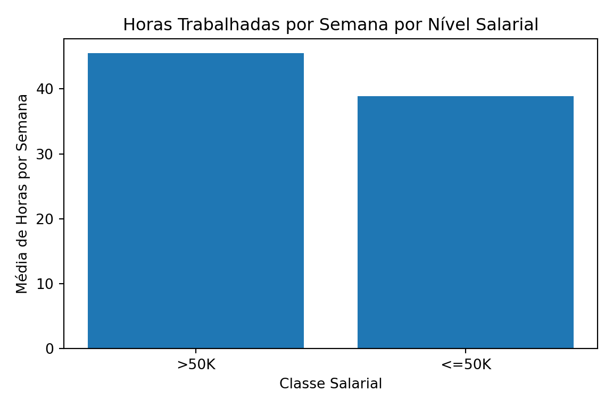

import polars as pldesafio11
#Importação dos dados
local = "./ME315/renda_adulta.csv.gz" # local do arquivo
col_names = [
"age", "workclass", "fnlwgt", "education", "education-num",
"marital-status", "occupation", "relationship", "race", "sex",
"capital-gain", "capital-loss", "hours-per-week", "native-country", "income"
] # nome das colunas
col_types = {
"age": pl.Int64,
"workclass": pl.Categorical,
"fnlwgt": pl.Int64,
"education": pl.Categorical,
"education-num": pl.Int64,
"marital-status": pl.Categorical,
"occupation": pl.Categorical,
"relationship": pl.Categorical,
"race": pl.Categorical,
"sex": pl.Categorical,
"capital-gain": pl.Int64,
"capital-loss": pl.Int64,
"hours-per-week": pl.Int64,
"native-country": pl.Categorical,
"income": pl.Categorical
} # tipo das colunas
df = pl.read_csv( # importacao do df
local,
has_header=False, # sem cabeçalho
new_columns=col_names, # criando cabeçalho com os nomes
schema_overrides=col_types, # tipo das colunas
null_values="?" # ? sao dados nulos
)# tipo das colunas
print(dict(zip(df.columns, df.dtypes))){'age': Int64, 'workclass': Categorical, 'fnlwgt': Int64, 'education': Categorical, 'education-num': Int64, 'marital-status': Categorical, 'occupation': Categorical, 'relationship': Categorical, 'race': Categorical, 'sex': Categorical, 'capital-gain': Int64, 'capital-loss': Int64, 'hours-per-week': Int64, 'native-country': Categorical, 'income': Categorical}# dimensoes da tabela
print(df.shape)(32561, 15)# Quantas pessoas recebem acima de $50.000 e quantas pessoas recebem abaixo deste limiar?
# filtrando renda acima de 50k e abaixo de 50k e pegando o tamanho
acima_50k = df.filter(pl.col("income") == ">50K").height
menor_igual_50k = df.filter(pl.col("income") != ">50K").height
print("%i pessoas recebem mais de $50.000 e %i recebem menos de $50.000"
% (acima_50k, menor_igual_50k))7841 pessoas recebem mais de $50.000 e 24720 recebem menos de $50.000# criando o objeto renda longo
renda_longo = df.unpivot(
index=[col for col in df.columns if col not in ["capital-gain", "capital-loss"]], # colunas que não serão transformadas
on=["capital-gain", "capital-loss"], # colunas para transformar
variable_name="tipo", # coluna dos tipos
value_name="valor" # coluna dos valores
)
renda_longo.select(["tipo", "valor"])
shape: (65_122, 2)
| tipo | valor |
|---|---|
| str | i64 |
| "capital-gain" | 2174 |
| "capital-gain" | 0 |
| "capital-gain" | 0 |
| "capital-gain" | 0 |
| "capital-gain" | 0 |
| … | … |
| "capital-loss" | 0 |
| "capital-loss" | 0 |
| "capital-loss" | 0 |
| "capital-loss" | 0 |
| "capital-loss" | 0 |
# Média de horas de trabalho por clase salarial
media_horas = df.group_by("income").agg( # agrupando pela classe salarial
pl.col("hours-per-week").mean().alias("media_horas")
#criando uma coluna de media de horas com a media de horas por semana
)
media_horas
shape: (2, 2)
| income | media_horas |
|---|---|
| cat | f64 |
| ">50K" | 45.473026 |
| "<=50K" | 38.84021 |
# Pessoas amostradas por profissão
pessoas_por_profissao = df.group_by("occupation").agg( # agrupando por profissão
pl.len().alias("qtde_pessoas")
# contando qtde de pessoas em cada grupo
)
pessoas_por_profissao
shape: (15, 2)
| occupation | qtde_pessoas |
|---|---|
| cat | u32 |
| "Prof-specialty" | 4140 |
| "Handlers-cleaners" | 1370 |
| "Armed-Forces" | 9 |
| "Transport-moving" | 1597 |
| "Tech-support" | 928 |
| … | … |
| "Machine-op-inspct" | 2002 |
| "Farming-fishing" | 994 |
| "Adm-clerical" | 3770 |
| "Exec-managerial" | 4066 |
| "Other-service" | 3295 |
# Gráfico de barras
#!pip install matplotlib
import matplotlib.pyplot as plt # importando o pacote para criação do grafico
categorias = media_horas["income"].to_list() # lista do eixo x
valores = media_horas["media_horas"].to_list() # lista do eixo y
plt.figure(figsize=(6, 4)) # tamanho da imagem
plt.bar(categorias, valores)
# Grafico de barra onde a classe salarial é o eixo x e a media o eixo y
plt.xlabel("Classe Salarial")
plt.ylabel("Média de Horas por Semana")
plt.title("Horas Trabalhadas por Semana por Nível Salarial")
# titulos
plt.tight_layout() # layout
plt.show()# mostrar o grafico
# Discriminação salarial entre gêneros biológicos
# Quantidade de pessoas por classe salarial e genero
distribuicao_genero = df.group_by(["sex", "income"]).agg(
#agrupando por sexo e classe salarial
pl.len().alias("n_pessoas") # contando qtde por grupo
).sort(["sex", "income"]) # ordenando por sexo e classe salarial
# total por gênero
totais = df.group_by("sex").agg(
pl.len().alias("total")
)
# cálculo da proporção
distribuicao_com_total = distribuicao_genero.join(totais, on="sex")
# juntando as tabelas de qtde de classe salarial por genero com a do total por genero
distribuicao_com_total = distribuicao_com_total.with_columns(
(pl.col("n_pessoas") / pl.col("total") * 100).round(2).alias("porcentagem")
# calculando a proporção
)
distribuicao_com_total
shape: (4, 5)
| sex | income | n_pessoas | total | porcentagem |
|---|---|---|---|---|
| cat | cat | u32 | u32 | f64 |
| "Female" | "<=50K" | 9592 | 10771 | 89.05 |
| "Female" | ">50K" | 1179 | 10771 | 10.95 |
| "Male" | "<=50K" | 15128 | 21790 | 69.43 |
| "Male" | ">50K" | 6662 | 21790 | 30.57 |
print("A porcentagem de homens que recebem mais de 50k dentre os homens é 3x maior que a proporção de mulheres que recebem 50k dentre as mulheres. Sendo assim, existe uma clara discriminação salarial entre generos biologicos")A porcentagem de homens que recebem mais de 50k dentre os homens é 3x maior que a proporção de mulheres que recebem 50k dentre as mulheres. Sendo assim, existe uma clara discriminação salarial entre generos biologicoscat("Este relatorio foi geradoem:", format(Sys.time(), "%d/%m/%Y %H:%M:%S"))Este relatorio foi geradoem: 07/10/2025 11:34:48